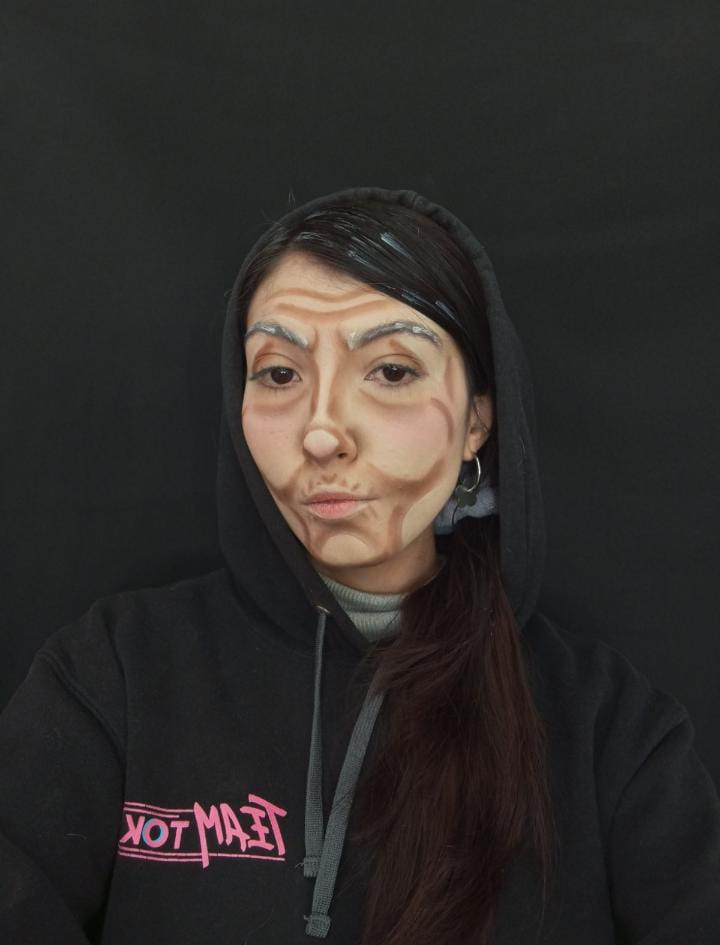

Maquillaje-Envejecimiento


El maquillaje de envejecimiento es una técnica que permite transformar la apariencia de un personaje para contar historias más profundas y creíbles. Es ideal para obras teatrales donde se busca dar vida a personajes complejos, desde un anciano gruñón y lleno de experiencia hasta la ternura y sabiduría de una persona mayor. A través de sombras, texturas y detalles, este maquillaje logra transmitir emociones, historia y personalidad, haciendo que cada interpretación sea más auténtica y conmovedora.